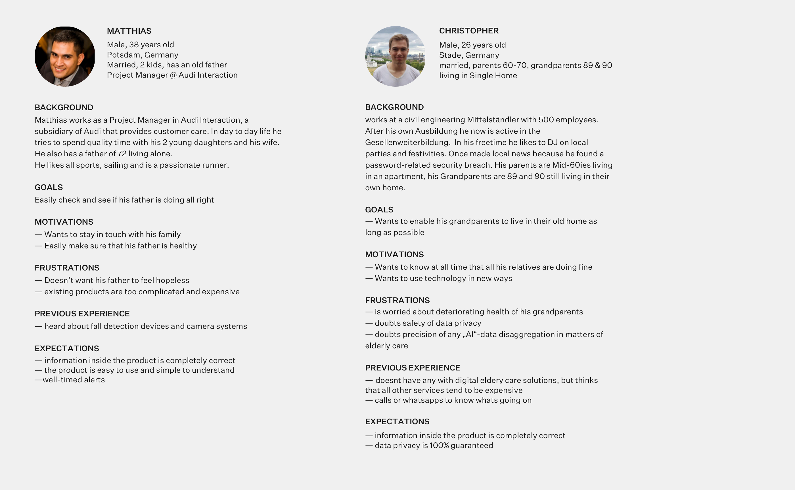
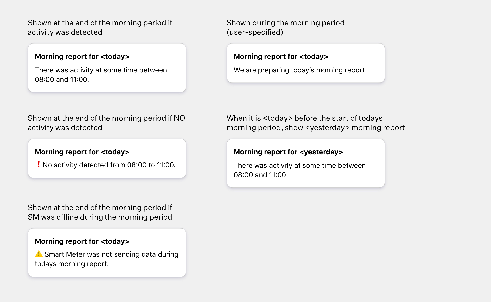

Fresh Care — iOS, Android UI Design, UX Design
Empowering senior family members with design and intelligent electricity meters.
Fresh Care analyzes seniors' electricity usage via an intelligent electricity meter. An algorithm detects their wellbeing and sends a daily report to their family members.
The challenge
Working in a multidisciplinary team consisting a product owner and data scientists. Take existing hardware and consumption data and ideate a new product based on a general idea — making seniors independent and safe.
My process
First, I facilitated workshops with the data science team to identify data and hardware limitations. Following that, user journeys based on our personas were used to define this innovative product within tight constraints.
Solutions
During ideation and research, we identified the morning as the most critical time in the day of a senior. Algorithm detects if there are anomalies in electric consumption during the morning.
Unlike its competitors, Fresh Care requires no cameras or additional hardware — making seniors feel independant and empowered. Family members are notified via SMS about potential problems.
Personas and user journeys
To define the product, we used personas and user journey maps — this helped us pinpoint the morning as the most important time.
Personas were based on family members of our pilot customers.

User flow
User journey 1 — senior is all right. This journey follows our user throughout his day, focusing on his thoughts and action related to his senior relatives.
User journey 2 — something happens to the senior.An opportunity was identified here — sending an SMS as soon as we detect soemthing is out of the ordinary.
Sketch interactive prototype was used for testing.
Onboarding new users
The dashboard graph and the algorithm are explained to users during onboarding. Algorithm detects all electrical consumption on top of always-on devices and refrigerator. If there is no activity detected (electric consumption doesn't increase in the morning), an SMS alert is sent out.
Since everyone wakes up at a different time, the end user s (family members) can set the exact time in which they want the algorithm to run — corresponding to their senior's relatives wake up time.
Setup progress is clearly communicated to the user.
Keeping family members in the loop
Live consumption graph lets users immediately notice anomalies. Daily activity reports provides end users with a quick overview into the wellbeing of their senior relatives. If necessary, they can explore further on the graph, with last 30 days of data available.

User set morning period is visible on the graph.
Users can add their senior relatives phone number to the home screen. This incentivizes communication with seniors, and a quick call can be placed in the case of an emergency.
Morning period message shown on the dashboard is defined for every case.
Emergency alerts
The most important part of Fresh Care is outside the app — SMS alerts are sent at the end of the morning period if there was no activity. They also get sent out if there are errors — whether with the internet, algorithm, or d ata inconsistency. Knowing an SMS is sent only in the case of emergencies, users can open the app and take necessary actions.
—